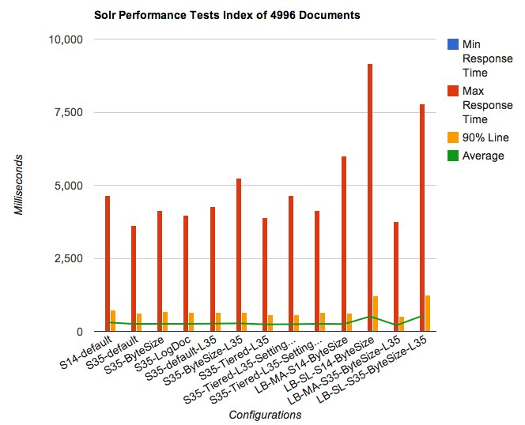
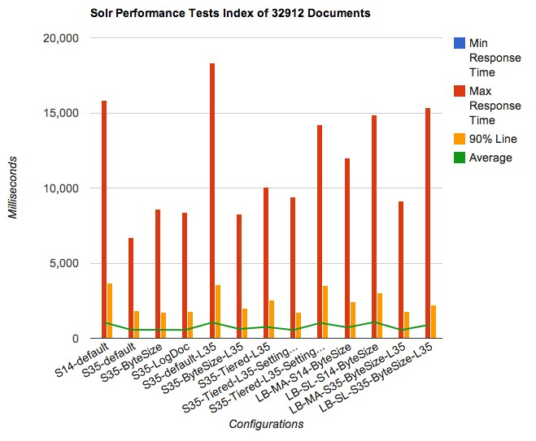
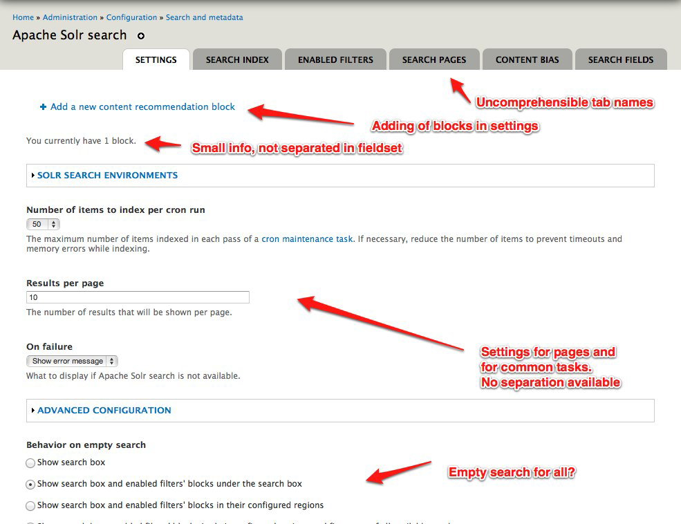
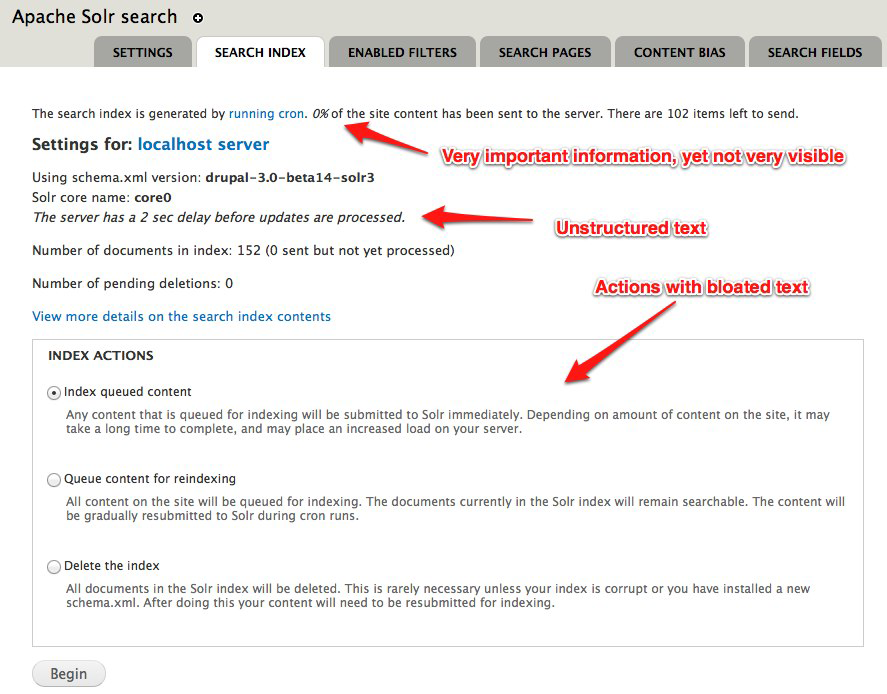
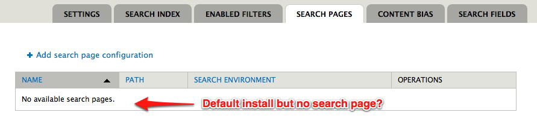
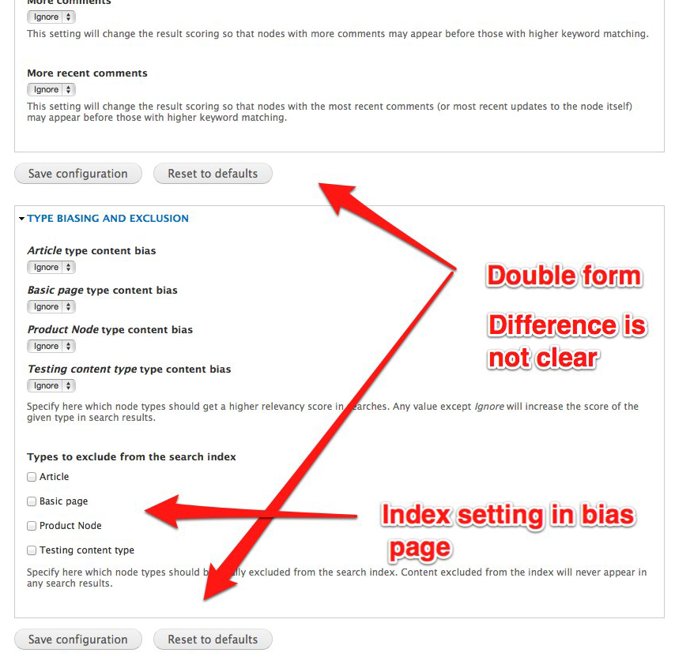

Drupal Dev Days
Drupal Search and Solr Wizardry

Matthias Hutterer
Nick Veenhof
Introduction

Nick Veenhof


Matthias Hutterer
Apache Solr
- Open Source Enterprise Search Platform
- Apache Foundation
- Full-text search, highlighting, faceted search, clustering, rich document handling
- Distributed
- Replication/scalable
- Java
- REST HTTP and answers in XML/JSON and some others
- Not Relational
Drupal to Solr
How does a solr search work?
Image of a solr requestHow can I create my own Query object?
New query object and how to make a query + using the fq/fl'sSolr internals
What do all these FQ, FL, FQ. mean?
FQ, QF, FL, ...How to use Elevate.xml
Example of elevate.xmlWhy are the schema and solrconfig.xml different in Search Api Solr and Apachesolr?
Tell about initiativeWhat are dynamic fields?
Explain the wildcard fields in solr and how drupal uses themHow can I Debug Solr
Tell about admin analysis + Jetty live log + debugQuery=True, indent=trueHow can I enable replication in Solr?
Tell about architecture and HA/Multi-regionHow can I monitor my Solr?
New Relic + mbeans (nagios, ...)Performance & Drupal
Performance testing Acquia Search
- MergePolicies
- LogByteSizeMergePolicy (1.4)
- LogDocMergePolicy (1.4)
- TieredMergePolicy (3.x)
- Jmeter
- Apache Access Logs
Performance Graphs (Buytaert.net)
Performance Graphs
Performance conclusions
- Keep LogByteMergePolicy with factor 4
- TieredMergePolicy very interesting. Completely different
- Solr 3.5 faster than Solr 1.4.1
- Don't rely on default settings
- Set Lucene version explicitly
This needed to be done...




Apache Solr
- UI refactoring
- Multi entity support
- From global to context driven
- Get rid of core search dependency
- Performance
- Access control
- De-duplication of code
- Automatic Testing (503 tests)
- Backport to 6.x-3.x
- ...